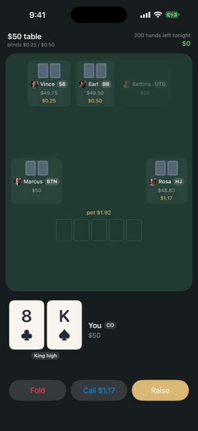
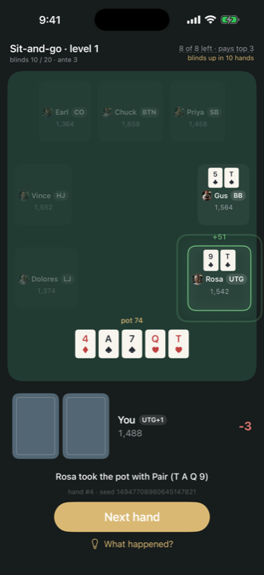
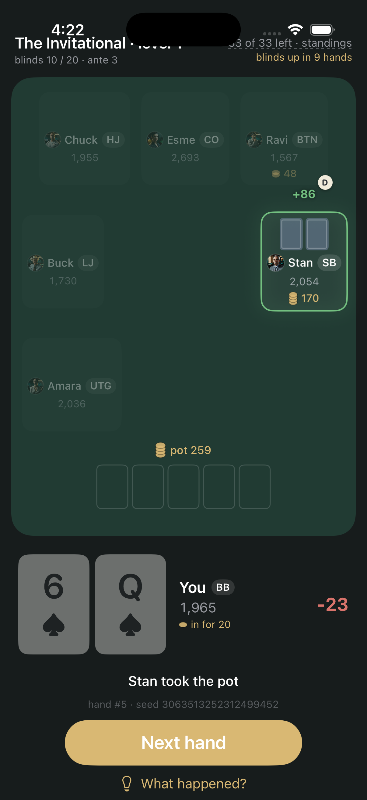
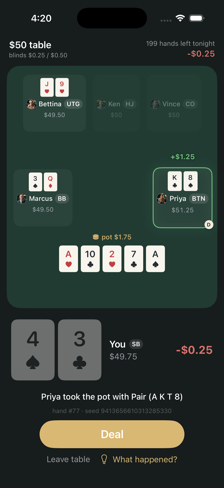
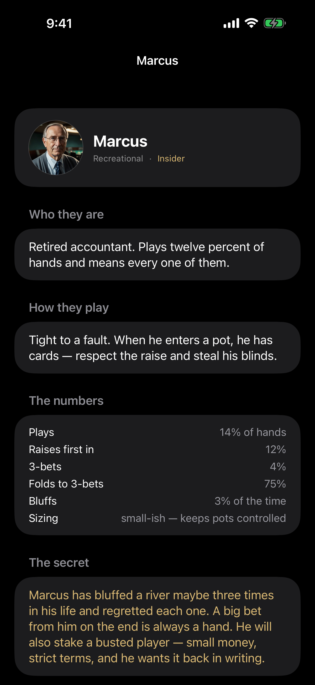
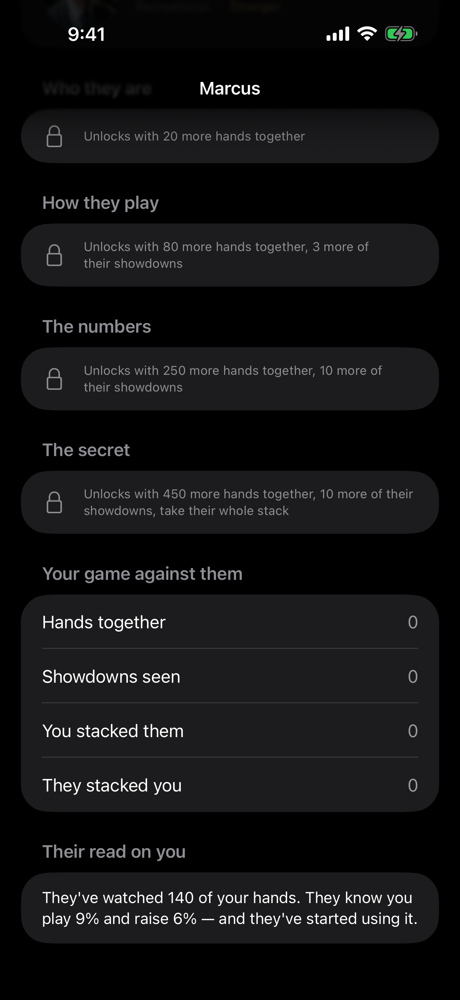
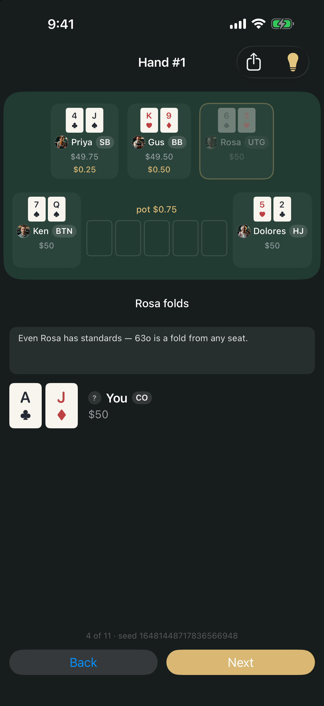
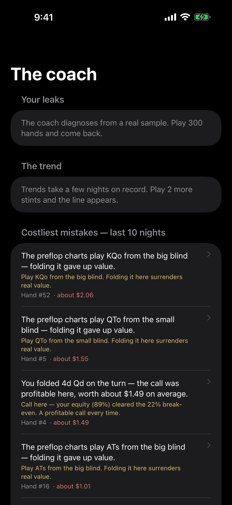
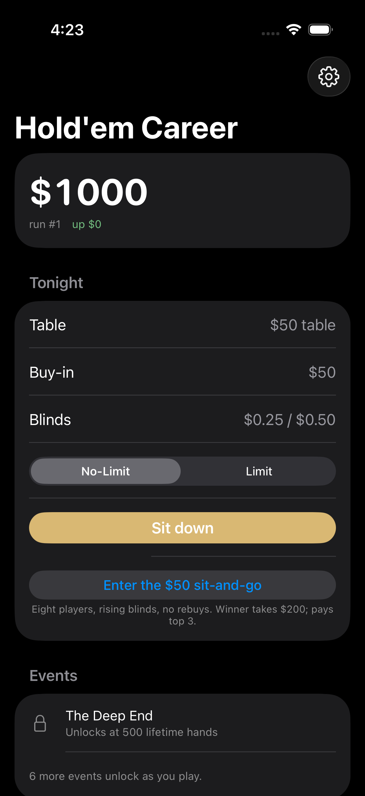
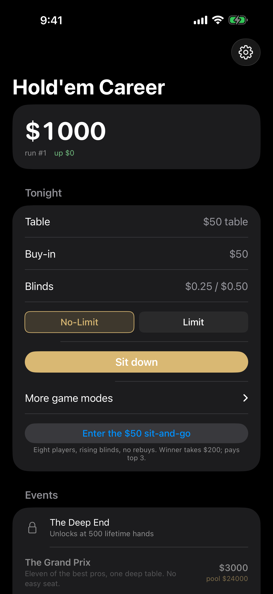

Hold'em Career
Single-player poker with real consequences and zero real money.
One bankroll. One life. Fifty-three opponents who remember you.
Download on the App Store $4.99 once · no in-app purchases



The premise
You get a bankroll and a seat at the $50 table. Everything after that, you earn.
Hold'em Career is a roguelike poker career: sit down with exactly one buy-in, no rebuys, no top-offs. Win and climb toward the $1,000 game. Go broke and the run is over — the bankroll gone, the ladder reset, the story finished. What survives is what you've earned: milestones permanently raise the starting bankroll of every run that follows, and what you've learned about the players never resets at all.
There is no chip store. There is no way to buy your way back. The bankroll being unbuyable isn't a limitation — it's the entire point. When a bad river costs you a stack, it costs you something the game refuses to sell back to you, and that's what makes folding the right hand feel like a decision instead of a tap.
The table
Fifty-three opponents in all — six friends who teach you the game at a home table, thirty-four regulars who make up the nightly cash tables, and thirteen who only show up in the biggest events — and not one of them is a difficulty slider. Marcus, the retired accountant, plays nine hands a night and has never once bluffed a river. Dolores wants to see every flop and will pay you for the privilege. The pros upstairs punish loose calls the way a real $5/$10 game does. Every character runs on the same decision engine with their own tendencies — and tilt is real here: stack someone and watch their next hands get looser.
Play enough hands against someone and their dossier opens, one layer at a time: who they are, how they play, their actual numbers — and finally, if you've studied them and taken their whole stack at least once, the secret that beats them. The game keeps your head-to-head book too: your net at their table, who stacked whom. Prefer a purer challenge? Flip on Keep me in the dark and play everyone as a stranger.

And they watch you back. Each character quietly builds a read on how you play — how often you raise, how loose you are, whether they've seen you fold under pressure. For most of the table the read fully seasons at eighty hands of observation — the sharpest read you sooner — and characters start adjusting to you: respecting the nit's raise, resisting the maniac's, stealing from players who always fold their blinds. Predictability has a visible price, and explain-replay shows exactly when it cost you.

When it goes wrong
Going broke doesn't have to end the run immediately. Someone at the table may offer to stake you — a character you've played against, at their terms. They take a cut of every winning night until you're square. One debt at a time. One loan token per run — with a second earned every rung you climb and then lose back. The climb is frozen while you owe, and stiffing a lender burns that bridge for the rest of your career.
And when you bust someone out — or they bust you — the moment gets its own beat: a full-screen reveal showing both hole cards, the board, and the winning hand before the next deal. Eliminations deserve more than a chip counter going to zero.
Learn the game for real
Every hand is recorded — all cards, every action, and the reason behind every AI decision, captured at the moment it was made. Replay any hand with every hole card face-up and read exactly why Vince shoved the turn ("still steaming from the last pot" is a legitimate reason). No other poker game tells you why.

After each session, the coach reviews your play: pot-odds mistakes, positional leaks, the calls that cost you — computed against your actual hands, not generic advice. Career stats track your VPIP, PFR and win rate by seat, and every metric comes with a plain-English explanation of what good looks like. The price of a call is shown at your decision point — information, not instruction.

Seven events
Beyond the nightly cash game, events come to town on a hands-played clock — never wall-clock, no daily timers, no login streaks. The schedule is yours. Each event returns every few hundred hands you play, gated by something you've actually earned.

- The Deep End — Double the starting chips, a slow blind clock, and room to actually play poker instead of shove-fold.
- The Turbo — Eight players, half the clock. Push-fold comes for everyone.
- The Shootout — Thirty-two runners, four tables. Win yours to reach the four-handed final on a fresh stack.
- The Invitational — A thirty-three-runner field across five tables that merge to one. Background tables play a hand every time you play a hand, on a shared blind clock. The biggest night there is.
- The Duel — Two players. One opponent from the legendary tier: Nadia, Roman, or Esme. Winner takes all.
- The Underground — After hours. Every seat earns a living from this game. Pros wall to wall, and the clock runs deep.
- The Hall — The ten greatest players who ever sat down: The Kid, The Ghost, The Godfather, The Prodigy, The Brat, The Dark Lord, The Magician, The Cowboy, The Rounders, The Cincinnati Kid. One table. One champion.
The Legends
Alongside the regular cast of thirty-four are thirteen named opponents who only appear in the special events. Three — Nadia, Roman, and Esme — populate The Duel and The Underground. The ten Legends appear exclusively in The Hall: characters drawn from the history of the game, each with their own playing style, portrait, and biography. Beat one and earn their seal. Beat all ten and earn something harder to name.
Rex — the whale, a semi-retired tech executive who has never once worried about the price of anything — sits at the $500 table and above, tilting the regular cash game's texture whenever he's in the lineup.
The Championship Circuit
Build a $20,000 lifetime bankroll and a second calendar opens: seven fixed-buy-in events against the toughest fields in the game — pros, Legends, or both, depending on the night.

- The Grand Prix — Eleven of the best pros, one deep table. No easy seat.
- The Circuit — The Legends play fast. Keep up or go home.
- The Open — Open to anyone who belongs here. Not everyone does.
- The Summit — Eight legends at one table. You earned your seat — now hold it.
- The Masters — No weak spots. Everyone at this table has a resume.
- The Premier — By invitation. The elite of the elite, one deep stack each.
- The Championship — One table, one title. Every hand here gets remembered.
Entries run from a $3,000 seat up to $10,000 at the title match itself — a separate ladder for players who've already made it.
Built like we mean it
No real money, ever. No gambling, no cash-outs, no chip purchases. No ads, no accounts, no internet required — your career lives on your device and nowhere else, and the app collects nothing. Every hand deals from a seed shown in the app, so any hand can be replayed exactly; the AI never sees your cards. Seventy-eight achievements from First Orbit to Every Name in the Book, because bragging rights shouldn't touch game balance.
Also from Actual Clown: Blackjack Career
The single-player casino roguelike. Count the shoe with authentic Hi-Lo math, dodge the pit boss, take streaming chat dares, drill basic strategy in The Gym, and play 10 casino event games. Zero ads, zero chip purchases.